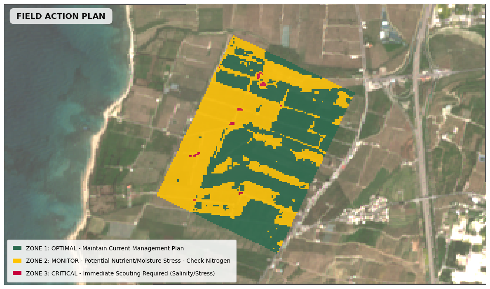

From Satellite Data to
Field Action Plans
Specialist reports delivered directly to your agronomist or decision-maker.

Field Action Plan
A comprehensive zone-based prescription map that classifies every part of your field into OPTIMAL, MONITOR, and CRITICAL zones with specific actions for each. Never waste resources on fields that don't need intervention.
- Zone 1: Optimal — Maintain current management
- Zone 2: Monitor — Check nitrogen & moisture
- Zone 3: Critical — Immediate scouting required

Harvest Readiness Forecast
Dual-phase maturity and desiccation mapping lets you know exactly when and where your crop is ready to harvest, maximizing efficiency and minimizing losses from premature or delayed cutting.
- Ready-to-harvest zone identification
- Senescing (Monitor) area mapping
- Active growth zone detection
Irrigation Infrastructure Audit
Detect hydraulic anomalies, clogs, and leaks in your irrigation network from above without walking every meter of pipe. Our audit pinpoints problem areas so your team acts precisely where needed.
- Clog detection via water stress signals
- Leak detection via wet-spot analysis
- Full network anomaly mapping
.png)
Variable Rate Seeding (VRS)
Optimize your seeding strategy across productivity zones. Our VRS maps classify your field into low, standard, and high-density zones, reducing seed waste while maximizing stand uniformity and final yield.
- Low-density zones for poor-productivity areas
- Standard seeding for average zones
- High-density for high-potential zones

Carbon Performance Monitoring
Track net biomass carbon sequestration and additionality across your fields. Our carbon performance reports are essential for sustainable farming certifications and carbon credit programs.
- Carbon loss zone identification
- Stable baseline area monitoring
- Carbon gain zone mapping

Scouting & Critical Alerts
Never miss a critical field event. Our automated alert system detects sudden anomalies from disease outbreaks to salinity intrusions and flags zones requiring urgent field inspection before losses escalate.
- Urgent field inspection zones highlighted
- Automated satellite-triggered alerts
- Instant agronomist notification